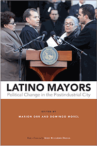

<body bgcolor="#FFFFFF" text="#000000" link="#0000FF" vlink="#CC0000" alink="#CC0000"><center><hr width="350" size="1" align="center" noshade>The first book to examine the rise of Latino mayors in the United States<hr width="350" size="1" align="center" noshade><p><a href="https://cdcshoppingcart.uchicago.edu/Cart/ChicagoBook.aspx?ISBN=&&PRESS=temple" target="_top">Buy this book!</a> | <a href="https://cdcshoppingcart.uchicago.edu/Cart/Cart.aspx?PRESS=temple" target="_top">View Cart</a> | <a href="https://cdcshoppingcart.uchicago.edu/Cart/Cart.aspx?PRESS=temple" target="_top">Check Out</a></p><p></p></center><!--none//--><h1 class = "booktitle">Latino Mayors</h1> <h1 class = "subtitle">Political Change in the Postindustrial City</h1>
<h3>Edited by Marion Orr and Domingo Morel With a Foreword by Luis Ricardo Fraga</h3>
paper: $32.95, Feb 18<BR>EAN:&nbsp;978-1-4399-1543-1<BR><font color=#990033>Not Yet Published Preorder</FONT><font size=-7><br>&nbsp;</font></p><p class="info">cloth: $94.50, Feb 18<BR>EAN:&nbsp;978-1-4399-1542-4<BR><font color=#990033>Not Yet Published Preorder</FONT><font size=-7><br>&nbsp;</font></p><p class="info">e-book: $32.95, <BR>EAN:&nbsp;978-1-4399-1544-8<BR><font color=#990033>Not Yet Published Preorder</FONT><font size=-7><br>&nbsp;</font></p></p></td></tr></table>
<BR> <p class="info">312 pp<BR> 6 x 9<BR> 32 tables, 11 line drawings, 2 maps <p class="info"><font size=-7>&nbsp;</font></p><p class="info">
</P><BLOCKQUOTE></BLOCKQUOTE>
<p>As recently as the early 1960s, Latinos were almost totally excluded from city politics. This makes the rise of Latino mayors in the past three decades a remarkable American story-one that explains ethnic succession, changing urban demography, and political contexts. The vibrant collection Latino Mayors features case studies of eleven Latino mayors in six American cities: San Antonio, Los Angeles, Denver, Hartford, Miami, and Providence.<br/><br/>The editors and contributors analyze Latino mayors for their governing styles and policies. They describe how candidates shaped race, class, and economic issues-particularly in deracialized campaigns. Latino Mayors also addresses coalition politics, political incorporation, and how community groups operate, as well as the challenges these pioneers have faced in office from political tensions and governance issues that sometimes even harm Latinos. <br/><br/>Ultimately, Latino Mayors charts the performances, successes, and failures of these elected officials to represent their constituents in a changing economic and urban environment.<br/><br/> <i>Contributors include: Stefanie Chambers, Carlos E. Cu</i><i>&#233;llar, Emily M. Farris, Maria Ilcheva, Robert Preuhs, Heywood T. Sanders, Ellen Shiau, and the editors.</i><br>
<P CLASS="top"><A HREF="#top">BACK TO TOP</A></P>&nbsp;
<BR>&nbsp;
&nbsp;<P>
</P><BR>&nbsp;
<H2 class="inpageheading"><A NAME="author bio"></a>About the Author(s)</H2><p><b>Marion Orr</b> is the Frederick Lippitt Professor of Public Policy and Professor of Political Science and Urban Studies at Brown University. He is the author of <i>Black Social Capital: The Politics of School Reform in Baltimore, 1986-1999</i>; co-author of <i>The Color of School Reform: Race, Politics, and the Challenge of Urban Education</i>; and <i> </i>editor of <i>Transforming the City: Community Organizing and the Challenge of Political Change, </i>among other books.<br>
<p><b>Domingo Morel</b> is Assistant Professor of Political Science at Rutgers University, Newark, and an affiliate member of Global Urban Studies and the Center on Law, Inequality, and Metropolitan Equity at Rutgers Newark. He is co-founder of the Latino Policy Institute at Roger Williams University and past president of the Rhode Island Latino Political Action Committee.<br>
<P CLASS="top"><A HREF="#top">BACK TO TOP</A></P>
<p><h2 class="inpageheading"><a name="subjects"></a>Subject Categories</h2> <p><a href="http://www.temple.edu/tempress/political.html" target="_top">Political Science and Public Policy</a> <br><a href="http://www.temple.edu/tempress/urban.html" target="_top">Urban Studies</a> <br><a href="http://www.temple.edu/tempress/latino.html" target="_top">Latino/a Studies</a> <br><a href="" target="_top"></a> <br><a href="" target="_top"></a> </p>
</p>
<P>
</P>
<p align="center"><a href="https://cdcshoppingcart.uchicago.edu/Cart/ChicagoBook.aspx?ISBN=&&PRESS=temple" target="_top">Buy this book!</a> | <a href="https://cdcshoppingcart.uchicago.edu/Cart/Cart.aspx?PRESS=temple" target="_top">View Cart</a> | <a href="https://cdcshoppingcart.uchicago.edu/Cart/Cart.aspx?PRESS=temple" target="_top">Check Out</a></p><p><font face="Arial" size="1"><a href="copyright.html" onMouseOver="window.status='Web Copyright Policy';return true;" onMouseOut="window.status=''" title="Web Copyright Policy">&copy;</a> 2018 <a href="http://www.temple.edu" target="new" onMouseOver="window.status='Link to Temple University home page';return true;" onMouseOut="window.status=''" title="Link to Temple University home page">Temple University</a>. All Rights Reserved. http://www.temple.edu/tempress/titles/2472_reg.html</font></p>